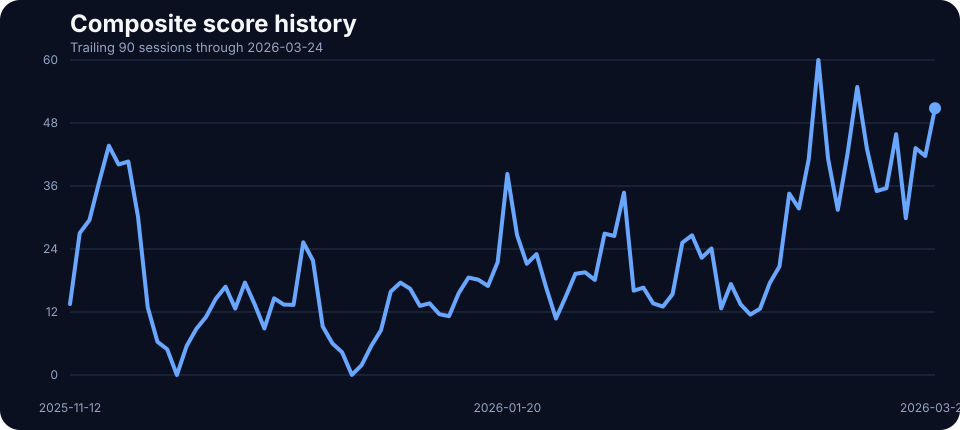
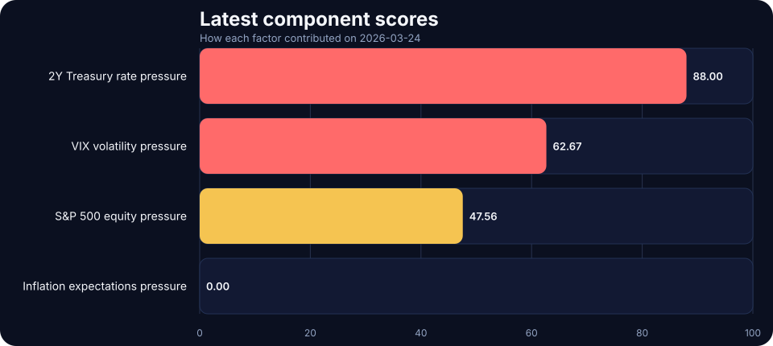

Automated live-data post
2026-03-24 TACO Pressure Index Update: Low at 20.00
It is not a forecast of policy decisions; it is a structured way to monitor pressure building across markets. On 2026-03-24, the score printed 20.00/100 in the low regime, with equity stress and front-end rate pressure doing most of the work.
Fresh macro pressure read for 2026-03-24: the TACO Pressure Index closed at 20.00/100, signaling a low pressure regime as equity stress and front-end rate pressure shaped the daily read. See the chart pack, score regime, and what drove the latest reading.
Pressure history

Latest component scores

Today’s component breakdown
S&P 500 equity pressure
30.00/100
n
2Y Treasury rate pressure
20.00/100
n
VIX volatility pressure
20.00/100
n
Inflation expectations pressure
10.00/100
n
Method in one paragraph
The TACO Pressure Index converts four live market inputs into 0–100 pressure scores and averages them into a composite reading. The framework penalizes S&P 500 drawdowns, rising 2-year Treasury yields, higher 5-year breakeven inflation, and elevated VIX readings, then groups the result into LOW, ELEVATED, HIGH, and EXTREME regimes.